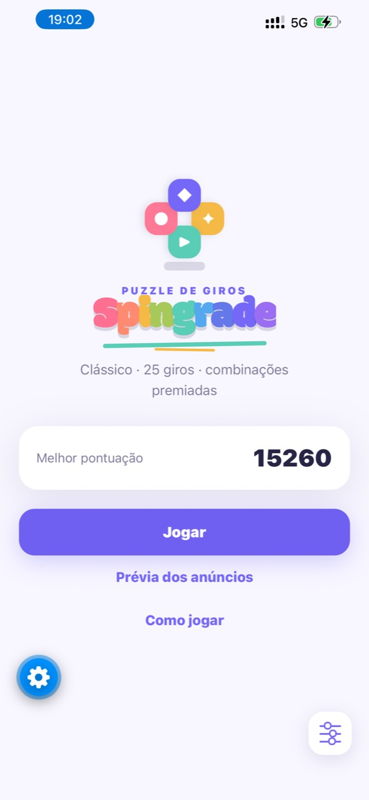

Puzzle de girosiOS & Android
Gire. Combine. Vá mais longe.
Spingrade transforma movimentos simples em uma cadeia de decisões. Cada linha deslocada pode abrir uma combinação, ativar uma cascata e devolver os giros que mantêm sua partida viva.


O desafio
Planeje o próximo giro.
Você começa com uma quantidade limitada de movimentos. Combine três ou mais blocos, crie cascatas e conquiste giros extras para continuar jogando.
- Controle por deslize, pensado para uma mão
- Combinações de linhas e colunas
- Bônus que premiam leitura de tabuleiro
- Progressão de dificuldade ao longo da partida
Mais Robb Studios
Enquanto os blocos giram, outro caminho espera.
Conheça Rumster, o puzzle de caminhos da Robb Studios.
Conhecer Rumster →